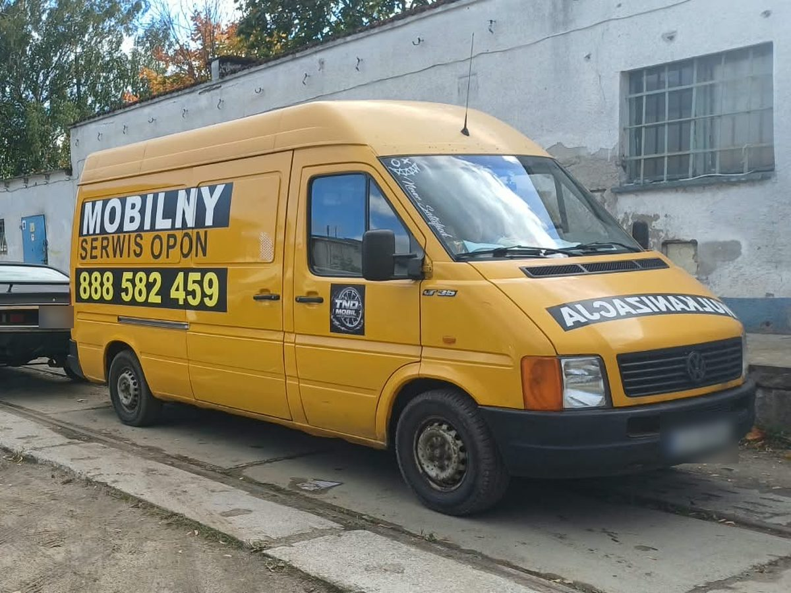

W skrócie: wróć na letnie, gdy średnia temperatura dobowa przez kilka dni z rzędu utrzymuje się powyżej 7°C, a w prognozie nie widać już nocnych przymrozków. Zwykle to kwiecień.
Ta sama zasada 7°C — tylko w drugą stronę
Miękka mieszanka zimowej opony, która zimą daje przyczepność, w cieple robi się „gumowata”. Auto gorzej reaguje na skręt, a opona szybciej się ściera. Gdy temperatura stabilnie przekracza 7°C, opona letnia zaczyna działać lepiej niż zimowa.
Dlaczego nie jeździć na zimówkach latem?
- Dłuższa droga hamowania — na ciepłym i suchym asfalcie zimowa opona hamuje gorzej niż letnia.
- Szybsze zużycie — miękka guma ściera się w cieple w ekspresowym tempie. Tracisz bieżnik, który przydałby się następnej zimy.
- Większe spalanie i hałas — zimowa opona ma większe opory toczenia.
Nie zmieniaj za wcześnie
Kilka ciepłych dni w marcu to jeszcze nie wiosna. Jeśli w nocy temperatura wciąż spada w okolice zera, a rano zdarza się szron, poczekaj. Dobry sygnał to tydzień–dwa stabilnej pogody bez przymrozków w prognozie.
Umów termin wcześniej
Pierwsze ciepłe weekendy to szczyt sezonu — wszyscy chcą zmienić opony w tym samym czasie. Najwygodniej umówić termin z wyprzedzeniem. My przyjeżdżamy pod dom lub pod pracę, więc nie musisz tracić czasu w kolejce do warsztatu.
Co zrobić ze zdjętymi zimówkami?
- Umyj opony i felgi, osusz je
- Oznacz, gdzie każde koło było założone (np. PP — prawy przód), żeby przy następnej wymianie zamienić je osiami i wyrównać zużycie
- Koła na felgach przechowuj w stosie albo zawieszone; same opony — w pozycji stojącej, obracane co kilka tygodni
- Trzymaj je w chłodnym, suchym i ciemnym miejscu, z dala od smarów i paliw
Potrzebujesz pomocy z oponami? Przyjedziemy pod dom, do pracy albo na parking — w Gdyni, Sopocie, Gdańsku i okolicach.